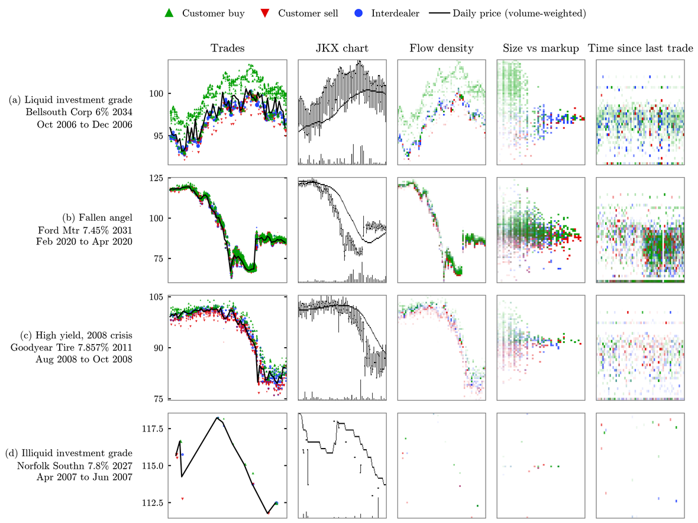
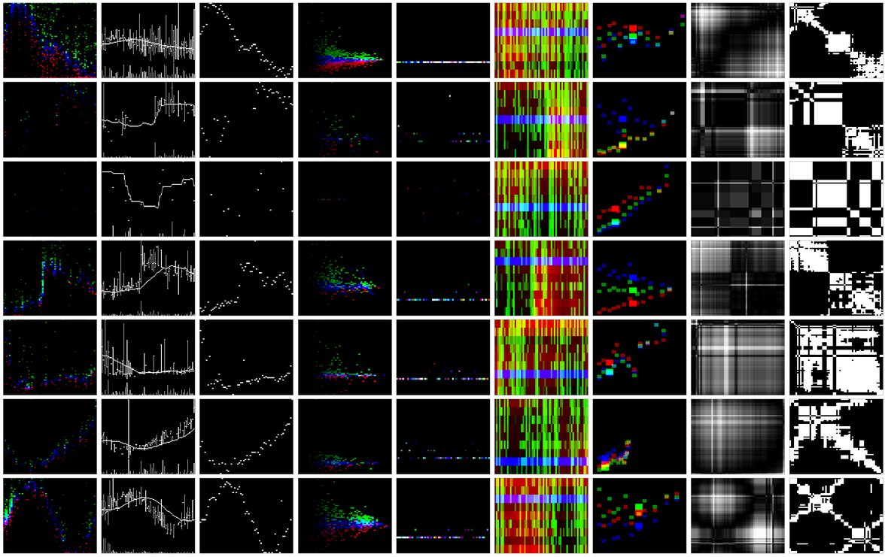
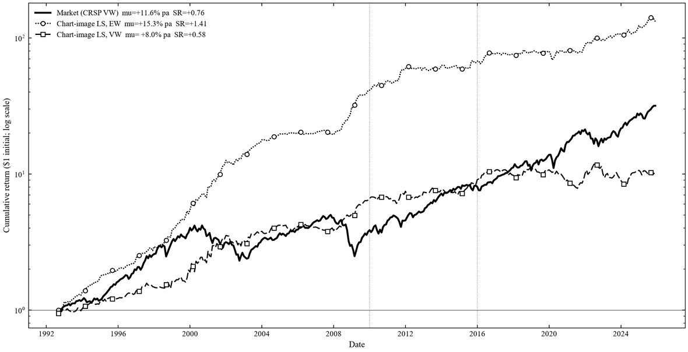

Philip Livdan
PhD student in finance
McCombs School of Business
The University of Texas at Austin
Pictured above: simulated corporate bond trades drawn in three image formats.
About
Philip Livdan
plivdan@utexas.edu
I am a PhD student in finance at the McCombs School of Business, The University of Texas at Austin.
I study asset pricing with machine learning and the financing of capital that becomes obsolete quickly. My current papers ask what a neural network reads from a picture of past prices and trades, and how lenders and suppliers share the risk that new equipment makes old equipment worth less.
Research
Image Encodings of Corporate Bond Trades
Abstract
Images of corporate bond trading predict bond returns only when they show the timing of trades, and simple measures of trading frequency subsume that predictability. Unlike a stock, a corporate bond has no standard chart: many bonds go days without trading, prices vary with trade size within a day, and the transaction record identifies the side the customer took. We render the same 60-day window of TRACE transactions in several image formats and train an identical convolutional neural network on each format to predict the bond's next-month return in excess of cash-flow-matched Treasuries. Across roughly 3,000 bonds from 2002 to 2025, formats that display only prices and volume, including the bar chart used for stocks, have no out-of-sample predictive power. A format that displays the time between trades earns a decile long-short return of 0.23 percent per month from 2011 to 2025 (t = 3.6). Its predictive coefficient becomes insignificant (t = 1.5) once we control for bond characteristics and counts of trading activity.


Figure 1. Four 60-day windows of TRACE trades. The first column plots every trade. The other columns draw the same window as the bar chart of Jiang, Kelly and Xiu, as trades binned by price and day, as trade size against distance from the daily price, and as the time since the previous trade. Green marks customer buys, red customer sells, and blue interdealer trades.


Figure 2. Nine image formats, in columns, on seven simulated bonds, in rows. From left to right the columns are trades binned by price and day, the stock bar chart, the daily price alone, trade size against markup, days since the previous trade, the issuer's bonds by maturity, peer bonds by duration and spread, a Gramian angular field, and a recurrence plot. The formats were designed on simulated trades before any were run on TRACE.
What Explains Image-Based Returns?
Abstract
The return predictability that an unsupervised model extracts from stock price charts is explained by a small set of standard price and volume variables. I train a variational autoencoder on 20-day price charts of U.S. stocks from 1992 to 2025. The model compresses each chart into sixteen latent variables and never observes returns. An equal-weighted long-short portfolio formed on these variables, with weights estimated through 2009, earns 7.2 percent per year out of sample from 2016 to 2025 (t = 2.7), and its alpha relative to the Fama-French five factors, momentum, and short-term and long-term reversal is 7.7 percent (t = 2.9). The value-weighted portfolio earns 2.2 percent (t = 0.5). Eleven variables, among them the past 20-day return, the slope of the moving average, and price acceleration, span the predictive content of the image: the component of the signal orthogonal to them earns 1.2 percent per year (t = 0.3).


Figure 3. Cumulative return of the chart-image long-short portfolio, equal-weighted (dotted) and value-weighted (dashed), and of the CRSP value-weighted market (solid), on a log scale. Portfolio weights are estimated on 1992 to 2009. The vertical lines mark the start of the validation period in 2010 and of the test period in 2016.
Financing Obsolescence: Vendor Guarantees as Commitment When the Supplier Controls Depreciation
When a supplier releases a new product generation, the older equipment its customers pledged as collateral loses value, so lenders restrict financing in advance. A residual-value guarantee from the supplier insures lenders and also commits the supplier to slower releases, which outside insurance cannot do. The setting is the financing of data-center GPUs.
Contact
| plivdan@utexas.edu | |
| Office | Department of Finance McCombs School of Business The University of Texas at Austin |
| Code | github.com/plivdanUT |